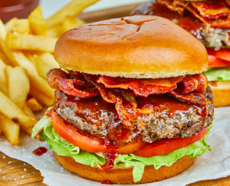

BBQ Bacon Cheeseburger

BBQ Bacon Cheeseburger
BBQ, bacon, & cheeseburgers. What a magic combination! This Barbecue Bacon Cheeseburgers recipe is packed
full of flavor. It's an easy burger recipe your family will love!
Ingredients
- 1 pound of bacon
- 1 1/2 pounds ground chuck or ground turkey
- 1 Tbsp of your favorite dry rub
- 1 Tbsp Worcestershire Sauce
- 1 tsp Dijon mustard
- 1 1/2 Tbsp canola oil
- 4 hamburger buns
- 8 fresh tomato slices (optional)
- 4 slices of onion (optional)
- 4 fresh romain lettuce pieces, or your preferred lettuce
- 1/2 cup of your favorite BBQ sauce
Steps
- Cook the bacon per package instructions and set aside.
-
In a medium size bowl place your meat along with the dry rub, Worcestershire, and Dijon and mix
well.
- Divide meat mixture into 4 equal portions (about 6 ounces each).
-
Form each portion loosely into a 3/4 inch thick burger and make a deep depression into the center
with your thumb.
- Heat your grill to medium high.
- Brush the burgers with oil.
-
Grill the burgers until golden brown and slightly charred on the first side, about 3 minutes for
beef and 5 minutes for turkey.
-
Flip over the burgers, cook the beef until golden brown and slightly charred on the second side, 4
minutes for medium rare or until cooked to desired doneness.
- Cook turkey burgers until cooked throughout, about 5 minutes on second side.
- Place burgers in a pan to rest for a few minutes.
- Toast your burger buns if you like them toasted.
-
Place the lettuce on the bun bottom, then the burger, tomato, onion and bacon (split the bacon into
4 portions).
- Pour the BBQ Sauce over the bacon and top with the bun.
- You are now ready to indulge.
Back to Main Menu